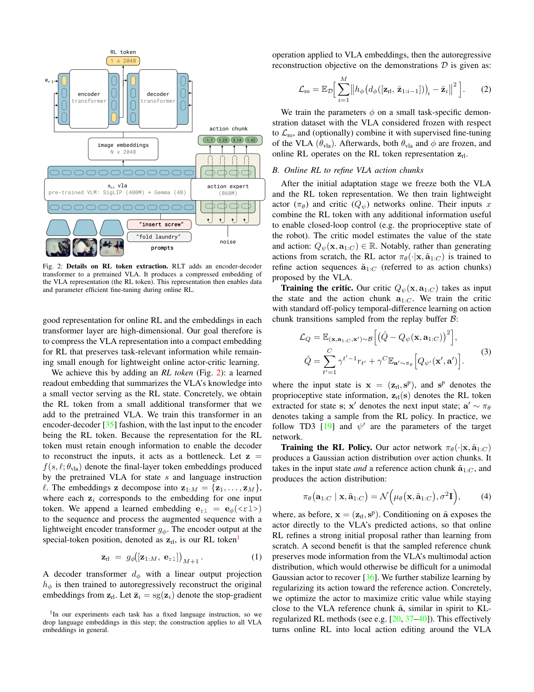
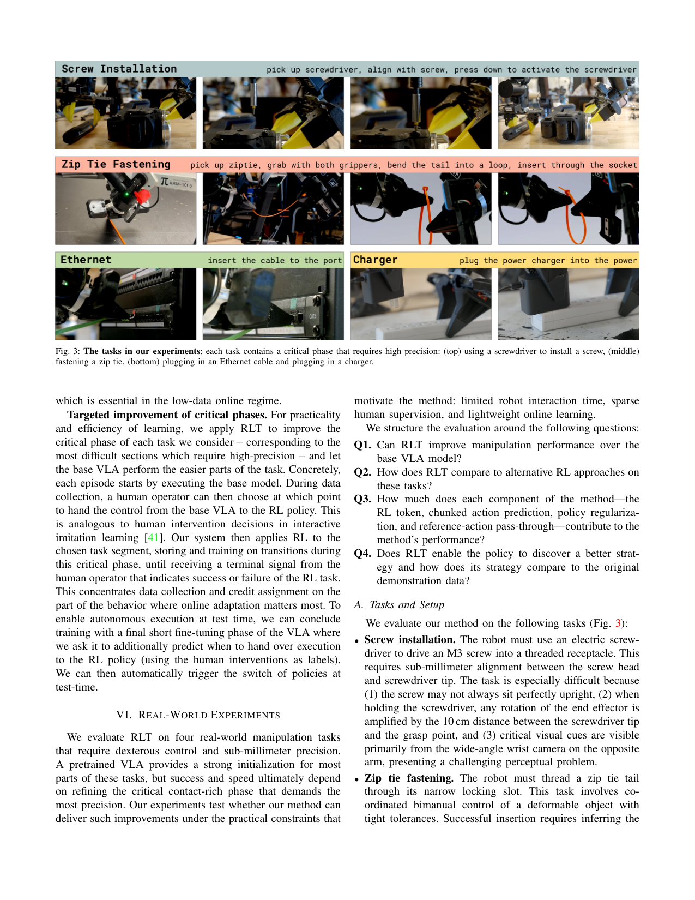
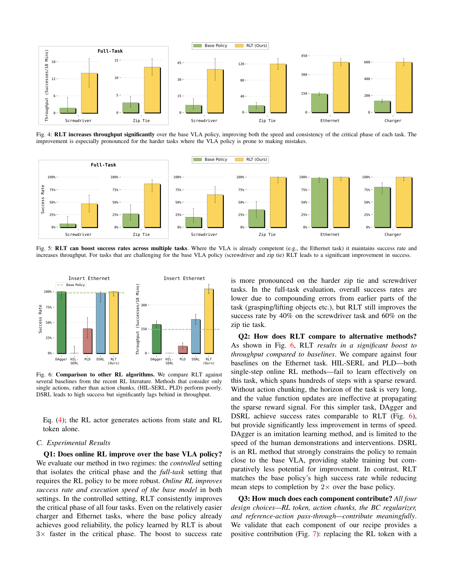
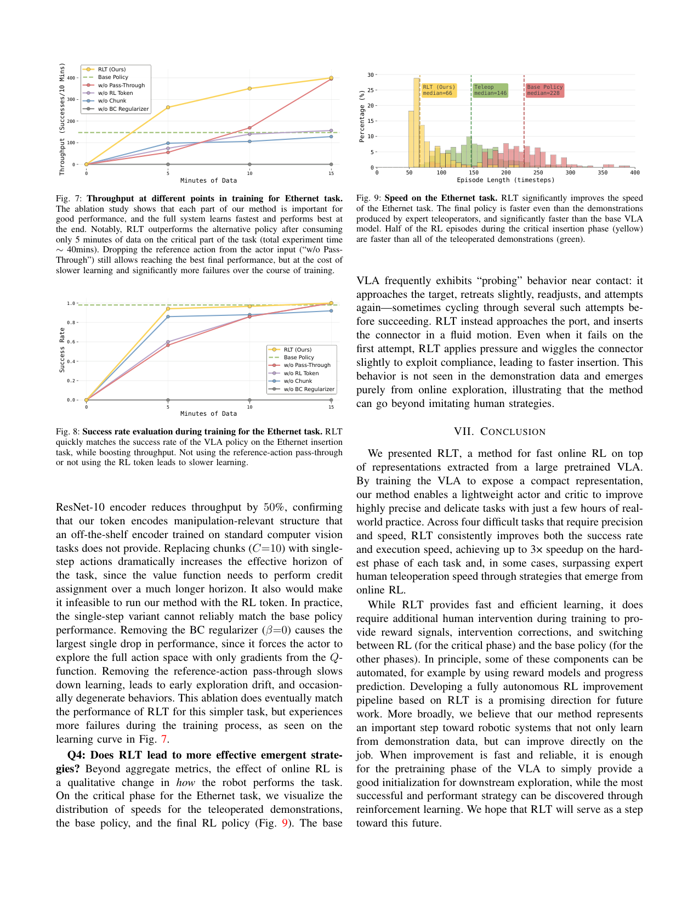

给冻结的 π0.6 VLA 训一个'RL token'瓶颈表示,在它上面挂一个几层 MLP 的 actor-critic 做 online RL 微调,几小时甚至几分钟真实机器人数据就能把毫米级精密任务的 critical phase 提速 3× 并显著提升成功率。
问题
要解决什么：VLA(π0.6)开箱能做很多操作,但在'最后一毫米'上失败——动作慢、要重试、critical phase 小误差累积成失败。要靠 RL 精修。但全量 RL 微调一个 billion 参数 VLA 既算力贵又样本低效,真实机器人几小时预算内做不完;而 SERL/RL100 这类小模型 online RL 虽然几小时能学,但放弃了 VLA 的泛化先验。作者要在两者之间架桥:既保 VLA 的感知+行为先验,又拿到小 actor-critic 的样本效率。
为什么 prior work 不够：现有 VLA-RL 路线分两极端。一端 RECAP/PPO 直接更新整个 VLA(如 π*0.6),需要大规模数据、算力贵、不适合几小时 real-world adaptation。另一端是轻量辅助模块:ConRFT 冻结 VLA encoder 训单步 action head(无 chunking,credit assignment 长horizon 失败);Policy Decorator 学残差(只在 sim 验证,百万步);PLD 预训 critic 再学单步残差(单步限制);DSRL 在 diffusion noise 空间学 latent policy(强约束 VLA、改进空间小);GR-RL 多阶段离线 BC + 在线 noise predictor。共同问题是:要么没 chunking 导致稀疏奖励下 credit assignment 失败,要么强约束 VLA 限制改进空间,要么单步无法匹配 VLA 的原生 chunk 接口。RLT 三个差异点:①RL token 作为压缩状态表示;②chunk-level action(C 控制频率：50Hz 控制频率;VLA chunk H=50 (1s);RL chunk C=10 (0.2s),只执行前缀开环;每 2 步 stride 存 replay,1 秒数据≈25 样本 三个坑:①language 在 RL token 提取阶段被实验性 drop(任务固定指令),不是序列拼接进 RL;②多视角在 VLA 内部已被处理成 token,RL 侧只见 z_rl;③训练时 reference action 50% 概率 drop 成零(防 actor 抄作业),推理时必给。chunk 内开环执行 C=10 步,然后重新观测+重新规划。 backbone：π0.6 (SigLIP 400M + Gemma 4B VLM backbone + 860M action expert) 参数：VLA ~5.3B(冻结);RL token encoder/decoder φ 小 transformer(参数量论文未精确给,远小于 VLA);actor-critic 2 层 MLP hidden 256(zip/Ethernet/charger)或 3 层 MLP hidden 512(screw) 类型：frozen VLA + 瓶颈 RL token (encoder-decoder 预训) + 轻量 off-policy actor-critic (TD3 风格,chunk-level) 核心思想是分工:冻结 VLA 提供感知理解和行为先验(好的初始策略),小 actor-critic 负责在 critical phase 做 local refinement。RL token 是关键桥梁——把 VLA 的 2048 维高维 token 压成 1×2048 瓶颈向量,既保留 task-relevant 信息(靠 decoder 重建 loss 保证),又小到能挂轻量 MLP 做 sample-efficient online RL。三个设计选择互相强化:①chunk-level action (C=10 < H=50) 缩短 TD credit assignment horizon,匹配 VLA 原生 chunk 接口;②actor 条件化 VLA 参考 ã + KL 正则,把 RL 变成'编辑 VLA 动作'而非无约束搜索;③reference dropout 防 actor 抄作业、保独立 action 通路。三者叠加让几小时真实机器人数据就能精修毫米级任务。 → 详见 Architecture tab。输入 / 输出
输入
名称 类型 说明 camera images image 2 张腕部相机 + 1 张 base 相机,喂给冻结 π0.6,产出 VLA token embeddings z1:M language instruction text 每个任务固定一条指令(实验里),经 VLA 处理;RL token 提取时实验性 drop 语言 embedding proprioceptive state vector 关节位置+速度(screw 用关节位置;zip tie/Ethernet/charger 用末端位姿),直接进 actor-critic VLA reference action chunk continuous 冻结 π0.6 采样出的 H=50 步动作 chunk;RL actor 条件化于它(推理时必给,训练时 50% drop) 输出
名称 类型 说明 RL action chunk continuous C=10 步动作 chunk(50Hz 即 0.2s),14 维/步 = 140 维 chunked action Q value scalar critic 估的 chunk-level C-step return,用于 off-policy TD 训练 输入拼接 protocol
<bos_vla>[img_wrist1, img_wrist2, img_base, lang, proprio] → π0.6(冻结)→ z1:M token embeddings<eos_vla><bos_rltok>[appended e_rl=<rl>] → encoder g_φ → z_rl (1×2048)<eos_rltok><bos_rlstate>[z_rl ⊕ proprio]<eos_rlstate><bos_ref>[ã1:H ∼ π_vla(冻结采样)]<eos_ref><bos_actor>[π_θ(· | x, ã) → N(μ_θ(x,ã), σ²I) → a1:C]<eos_actor>
逐段解释:数据集
数据 规模 备注 π0.6 预训练 corpus 数万小时(继承) VLA 主干已在 PI 大规模跨本体数据上预训练,RLT 不重训 Screw installation demos 1-10h teleop M3 螺丝+电动螺丝刀,亚毫米对齐;10cm screwdriver 杠杆放大旋转误差;关键视觉线索只在对面腕部相机 Zip tie fastening demos 1-10h 双臂协调穿扎带尾进窄锁孔,可变形物体毫米级容差 Ethernet insertion demos 1-10h Ethernet 接头插凹陷端口,需角度+力度果断插入 Charger insertion demos 1-10h 充电器插排插,厘米级对齐,prongs/socket 观测不全 架构（摘要）
主干与结构
关键组件
为什么这样设计
数值 sense
项 值 backbone π0.6 = SigLIP 400M 视觉编码器 + Gemma 4B 语言模型 + 860M diffusion action expert;总参数 ~5.3B(冻结) rl_token 1×2048 维 bottleneck 向量;encoder/decoder φ 是轻量 transformer(论文未给精确层数,远小于 VLA) actor_critic 2 层 MLP hidden 256(zip tie/Ethernet/charger);3 层 MLP hidden 512(screw,因任务更难);参数量 << 1M 量级 action_chunk RL chunk C=10 步 @50Hz = 0.2s;VLA chunk H=50 步 @50Hz = 1s;每步 14 维 → RL actor 输出 140 维 chunked action control_frequency 50Hz 控制频率;chunk 内开环执行前 10 步(0.2s)后重新规划 rl_token_training φ 训 2000~10000 gradient steps on 单任务 demo data;VLA 可选 fine-tune(α>0);之后 VLA + φ 全冻结 online_rl 400~1000 episodes/task;实际机器人数据 15 分钟~5 小时;update-to-data ratio G=5(高 U2D,低数据 regime 必需);2 critic 更新 per 1 actor 更新;reference action 50% dropout;β 是 KL 正则系数 replay_subsampling stride 2 存中间步, reward 稀疏二值 +1(人类标 success)/0(failure);episode 长 30~120s(1500~6000 control steps);critical phase 5~20s(250~1000 steps) critic twin Q 集成(TD3),取 min 算 target;γ 折扣(论文未给精确值);target network ψ' 关键结果
指标 值 最强 baseline setup Critical phase speedup (hardest phase) up to 3× faster base π0.6 VLA 四任务 critical phase,15min~5h 真实数据 Screw installation success rate (full-task) +40% over base base π0.6 VLA M3 螺丝亚毫米对齐,5h 数据 Zip tie fastening success rate (full-task) +60% over base base π0.6 VLA 双臂穿扎带,5h 数据 Ethernet speed (episode length median) 66 steps (RLT) 146 steps (expert teleop) / 228 steps (base VLA) RLT 比 teleop 快 2.2×,一半 episode 比所有 teleop 快 Ethernet success rate vs RL baselines RLT 高成功 DAgger/DSRL 追平成功但 throughput 明显低;HIL-SERL/PLD(单步)失败 四 baseline 同等数据量 Sample efficiency (Ethernet) 5min 数据即超 base policy base π0.6 VLA total experiment ~40min Ablation: w/o RL token (换 ResNet-10) throughput 降 50% full RLT 证明 RL token 编码 manipulation 结构 Ablation: w/o BC regularizer (β=0) 最大单点跌幅 full RLT 无 anchor 让 actor 全空间裸搜 Robot data budget 15min~5h per task — 400~1000 episodes Insights
vs 同类工作
局限
可复现性
RL Token 架构详解
> 配套 card.json。RLT 是一个冻结 VLA + 瓶颈表示 + 小 actor-critic 的微调框架,而非新 VLA。下面先用 Mermaid 把数据流和训练闭环画清,再用文字把每个组件讲透。所有数字来自论文(页码标注)。
1. RLT 在系统里的位置(三阶段训练)
flowchart TB
subgraph Stage1["阶段1: 适配 VLA + 训 RL token(任务 demo)"]
D1["任务 demo data<br/>1-10h teleop"]
VLA1["π0.6 VLA<br/>(可选 fine-tune, α>0)"]
E1["RL token encoder g_φ<br/>append e_rl → 取 <rl> 位置"]
DEC1["RL token decoder d_φ<br/>自回归重建 z1:M (Lro)"]
D1 --> VLA1
VLA1 -->|token embeddings z1:M| E1
E1 -->|z_rl 1×2048| DEC1
DEC1 -->|重建 loss| E1
end
subgraph Stage2["阶段2: 冻结,跑 warmup"]
VLA2["π0.6 (冻结)"]
W["rollout VLA 参考策略<br/>N_warm 步 → prefill replay B"]
VLA2 --> W
end
subgraph Stage3["阶段3: online RL(actor-critic)"]
VLA3["π0.6 (冻结) → z1:M + ã1:H"]
E3["RL token encoder (冻结) → z_rl"]
X["RL state x = (z_rl, proprio)"]
ACT["actor π_θ(MLP)<br/>输入 (x, ã1:C)<br/>输出高斯 a1:C"]
CRIT["critic Q_ψ(MLP+twin Q)<br/>输入 (x, a1:C)"]
RB["replay buffer B<br/>VLA warmup + RL rollout + 人类干预"]
ROBOT["真实机器人 50Hz<br/>执行 a1:C 开环"]
HUMAN["人:success/failure 标签<br/>+ 可选 teleop 干预"]
VLA3 --> E3
VLA3 -->|ã1:C 参考动作| ACT
E3 --> X
X --> ACT
X --> CRIT
ACT -->|a1:C| ROBOT
ROBOT -->|transition| RB
HUMAN -->|reward + 干预| RB
RB -->|off-policy batch| CRIT
CRIT -->|Q| ACT
end
Stage1 --> Stage2 --> Stage3阶段 1(任务 demo,1-10h):训 RL token encoder g_φ + decoder d_φ(可选同时 fine-tune VLA)。g_φ 在 z1:M 末尾 append e_rl,过 transformer,取该位置输出 z_rl(1×2048 瓶颈)。d_φ 从 z_rl 自回归重建 z1:M,逼 z_rl 保留 task-relevant 信息。训 2000~10000 gradient steps 后冻结 φ + VLA。
阶段 2(warmup):用冻结的 VLA 参考策略 rollout N_warm 步,prefill replay buffer B,给 critic 初始学习信号。
阶段 3(online RL):rollout 和学习异步。每个 chunk 边界:VLA 产 ã1:H + RL token 模块产 z_rl;actor 输出 a1:C ~ N(μ_θ(x,ã), σ²I);执行 a1:C 开环(50Hz 即 0.2s)。人可干预(teleop 替换 actor 输出,干预时 ã 也换人类动作)。所有 transition 进 B。off-policy TD3 风格更新 critic(twin Q 取 min),actor 用 -Q + β·‖a-ã‖² 更新。
2. 输入/输出契约
| 方向 | 名称 | 类型 | 说明 |
|---|---|---|---|
| 输入 | camera images | image | 2 腕部 + 1 base,喂冻结 π0.6 产 z1:M |
| 输入 | language | text | 每任务固定一条指令(实验) |
| 输入 | proprio | vector | 关节位置+速度(screw);末端位姿(zip/Ethernet/charger) |
| 输入 | VLA 参考 chunk | continuous | 冻结 π0.6 采样的 H=50 步动作;RL 用前 C=10 步 ã1:C |
| 输出 | RL action chunk | continuous | C=10 步 @50Hz = 0.2s,14 维/步 = 140 维 |
| 输出 | Q value | scalar | critic 估的 chunk-level C-step return |
控制频率:50Hz;VLA chunk H=50 (1s);RL chunk C=10 (0.2s);replay stride 2 存中间步,1 秒数据≈25 样本。
数值 sense
| 项 | 值 | 出处 |
|---|---|---|
| 主干 | π0.6 = SigLIP 400M + Gemma 4B + 860M action expert;总 ~5.3B(冻结) | 论文 p4 Figure 2 |
| RL token | 1×2048 维 bottleneck 向量;encoder/decoder φ 轻量 transformer(精确层数论文未给) | 论文 p4, App B |
| actor-critic | 2 层 MLP hidden 256(zip/Ethernet/charger);3 层 MLP hidden 512(screw);参数量 << 1M | 论文 App B |
| RL chunk | C=10 步 @50Hz = 0.2s;每步 14 维 → 140 维 chunked action | 论文 p7, App B |
| VLA chunk | H=50 步 @50Hz = 1s | 论文 p3 |
| 控制频率 | 50Hz;chunk 内开环执行前 10 步后重新规划 | 论文 p7 |
| RL token 训练 | φ 训 2000~10000 gradient steps on 单任务 demo;VLA 可选 fine-tune;之后全冻结 | 论文 App B |
| online RL | 400~1000 episodes/task;15min~5h 真实数据;U2D G=5;2 critic 更新 per 1 actor 更新;reference 50% dropout | 论文 p5, App B |
| replay subsampling | stride 2 存 | 论文 p5, App B |
| reward | 稀疏 +1(人标 success)/0(failure);episode 30~120s(1500~6000 步);critical phase 5~20s(250~1000 步) | 论文 p6-7 |
| critic | twin Q 集成(TD3),取 min 算 target;target network ψ' | 论文 p4, App B |
给听众的标尺:5.3B 冻结 VLA + 1×2048 RL token + 几层 MLP(256/512 hidden)+ C=10 chunk + 50Hz + U2D=5 + 15min~5h 真实数据。最该记住的是"小":actor-critic << 1M 参数,所以几小时能学。
3. RL token:为什么需要瓶颈表示
这是 RLT 最核心的设计(p4)。
问题:VLA final-layer token embedding 高维(2048×M),直接喂 online RL 既算力贵又样本低效。但用 ResNet 这类通用视觉编码器,丢了 VLA 在大规模 web+机器人数据上学到的 manipulation-relevant 结构。
解法:在 VLA token 序列末尾 append 一个学习 embedding e_rl,过轻量 encoder transformer g_φ,取该位置输出 z_rl(1×2048)。训练 φ 时用一个 decoder d_φ 从 z_rl 自回归重建原 embeddings:
Lro = E_D [ Σ_i ‖ h_φ(d_φ([z_rl, z̄_1:i-1]))_i - z̄_i ‖² ]z_rl 必须保留足够信息才能让 decoder 重建,所以它是瓶颈——既压缩又保信息。stop-gradient 防 decoder 把 VLA embedding 拉偏,φ 只学"怎么压缩"不动 VLA。
为什么有效:消融证明换 ResNet-10 throughput 降 50%(p9 Figure 7)——RL token 编码了通用视觉编码器没有的 manipulation 结构。瓶颈设计让 z_rl 既保 VLA 知识又小到能挂轻量 MLP。
4. Chunk-level actor-critic:匹配 VLA 原生接口
这是 RLT vs 单步 RL 方法的核心差异(p3-4)。
为什么单步失败:50Hz 任务 episode 1500~6000 步,稀疏奖励只在 episode 末给。单步 RL 的 value function 要在 1500~6000 步 horizon 上做 credit assignment,reward 信号根本传不回去。HIL-SERL/PLD 在 Ethernet 任务完全失败就是直接证据(p8 Figure 6)。
RLT 的解法:actor/critic 都在 chunk 上操作。RL chunk C=10(0.2s) TD horizon 从 1500~6000 步缩到 10 步级,reward 信号能传播。同时 C 这是 RLT 让几小时数据够用的关键(p4-5)。 机制:actor 不从零生成,条件化于 VLA 采样的参考 chunk ã1:C: 等于把 online RL 变成"在 VLA 先验附近做 local refinement",而非无约束搜索。 reference action dropout(反直觉但必要):条件化 ã 会让 actor 倾向抄作业(尤其 critic 还没信号时)。所以训练时 50% 概率把 ã drop 成零,逼 actor 保独立 action 通路。推理时 ã 必给。一旦 critic 有信号,actor 自然学会偏离 ã 去提升 Q。 为什么有效:消融 w-o BC Regularizer(β=0)跌最狠——无 anchor 让 actor 在全 140 维空间裸搜,几小时数据不够(p9 Figure 7)。w-o Pass-Through 最终能追平但学得慢+训练中失败多。两个机制叠加:ã 提供强初始分布,β 限制探索,dropout 防抄作业。 承认 VLA 不该全推翻,只在它最弱的 critical phase 用 RL 补(p5-6)。 机制:每 episode 先用 base VLA 跑 easy phase,人类操作员决定何时切到 RL policy 跑 critical phase(类 interactive imitation learning)。RL 只在 critical phase 存/训 transition。 两阶段(screw/zip tie):先在 critical-phase only 训(降低方差,集中数据),再扩到 full-task(让 RL 策略对 VLA 诱导的初始状态分布鲁棒)。最后可选短 fine-tune VLA 学会何时切 RL policy,实现 test-time 自动切换。 为什么有效:critical phase 5~20s(250~1000 步),把几小时数据集中在这段,才有可能学会。full-task 阶段让策略对 VLA 诱导的更宽状态分布鲁棒,部署更稳。 关键:off-policy 让 VLA warmup + RL rollout + 人类干预全进 buffer 复用;高 U2D=5 在数据稀缺下榨干每条 transition;twin Q + target network 防 value overestimation。这套是 SERL/RL100 验证过的 sample-efficient real-world RL 配方,RLT 继承,只是把状态表示从 ResNet 换成 RL token。 RLT 的位置:介于"全量 RL"和"强约束 latent RL"之间,既保 VLA 知识(冻结+RL token),又允许 local refinement(条件化 ã + KL 而非强约束),且 chunk-level 匹配 VLA 原生接口——三者叠加让几小时真实数据精修毫米级任务成为可能。Qψ(x, a1:C) ≈ Σ_{t'=1}^{C} γ^{t'-1} r_t' + γ^C · E_{a'~πθ}[Qψ'(x', a')]5. Reference-action conditioning + KL anchor:把 RL 变成 local refinement
πθ(a | x, ã) = N( μθ(x, ã), σ²I )
Lπ(θ) = E[ -Qψ(x, a) + β · ‖a - ã‖² ]6. Critical-phase targeting + 两阶段训练:practicality 的关键
7. 训练闭环(sequence 图)
sequenceDiagram
participant VLA as π0.6 (冻结)
participant RLT as RL token encoder (冻结)
participant Actor as actor π_θ
participant Robot as 真实机器人 50Hz
participant Buffer as replay buffer B
participant Human as 人(标签+干预)
loop 每个 chunk 边界
VLA->>VLA: 处理图像+语言+proprio → z1:M
VLA->>Actor: 采样参考 chunk ã1:C
VLA->>RLT: z1:M
RLT->>Actor: z_rl (1×2048)
Actor->>Actor: π_θ(·|x,ã) → a1:C ~ N(μ,σ²)
alt 人干预
Human->>Robot: teleop a_human 替换 a1:C
Human->>Buffer: 存 (x, a_human, ã_human, r, x')
else 自主
Actor->>Robot: 执行 a1:C 开环 0.2s
Robot->>Buffer: 存 (x, a1:C, ã, r, x')
end
Human->>Buffer: 标 success/failure (r)
end
loop 异步 off-policy 更新
Buffer->>Actor+Critic: 采样 batch (U2D=5)
Critic->>Critic: twin Q TD3 更新 (取 min)
Actor->>Actor: -Q(x,a) + β·‖a-ã‖²
end8. 与其它 VLA-RL 路线的根本区别
路线 更新什么 动作接口 探索约束 真实数据预算 RECAP / 全量 VLA RL 整个 VLA chunk 无(全模型) 大规模、算力贵 ConRFT / PLD(单步 residual) 冻结 VLA + 单步 head 单步 弱 几小时但单步 credit assignment 失败 DSRL(diffusion noise space) latent noise policy chunk(隐式) 强约束 VLA 动作 高成功但 throughput 低 Policy Decorator 残差 + 超参缩放 单步 弱 sim only,百万步 RLT 冻结 VLA + 小 actor-critic chunk C=10 条件化 ã + KL anchor 15min~5h 真实数据
RLT 系统总览(门面图)

原文 caption：Our method introduces an 'RL token' into the VLA by training an encoder and decoder to produce a compact and meaningful representation from a VLA's internal features. The extracted representation is then used to train lightweight actor-critic networks with sample-efficient online RL, enabling very precise tasks to be fine-tuned with a few hours or even minutes of robot experience.
门面图。左:冻结 VLA + RL token encoder/decoder(产生 RL token)。中:小 actor-critic + critic + value Q(s,a) 在 RL token 上做 online RL。右:四个真实任务(螺丝/扎带/Ethernet/充电器)。核心信息:RLT 把'十亿参数 VLA 的 RL 微调'拆成'冻结 VLA + 几层 MLP actor-critic',所以能几小时真实数据训完。是论文分工哲学的视觉表达。
RL token 提取细节(最重要)

原文 caption：Details on RL token extraction. RLT adds an encoder-decoder transformer to a pretrained VLA. It produces a compressed embedding of the VLA representation (the RL token). This representation then enables data and parameter efficient fine-tuning during online RL.
全文最该看的图。π0.6 内部:SigLIP(400M)+Gemma(4B) VLM backbone 处理图像 token embeddings(N×2048),860M action expert。RLT 在 VLA token 序列末尾 append 一个 e_rl,过 encoder transformer g_φ,取该位置输出作为 RL token(1×2048)。decoder d_φ 训练时从 RL token 自回归重建原 embeddings(Lro loss),逼 RL token 成瓶颈。这张图同时回答'RL token 怎么提取、为什么是瓶颈、和 VLA 怎么接口'。
四个评测任务

原文 caption：The tasks in our experiments: each task contains a critical phase that requires high precision: (top) using a screwdriver to install a screw, (middle) fastening a zip tie, (bottom) plugging in an Ethernet cable and plugging in a charger.
三个真实任务的可视化:螺丝安装(电动螺丝刀+M3 螺丝,亚毫米对齐)、扎带紧固(双臂协调穿可变形扎带)、Ethernet+充电器插入。每个任务都有 critical phase(插入/紧固/旋转段)需高精度,5~20s/250~1000 步。是 RLT 设计动机的视觉证据——VLA 在 critical phase 最容易慢/失败,正是 RL 该精修的地方。
Throughput 提升(主结果)

原文 caption：RLT increases throughput significantly over the base VLA policy, improving both the speed and consistency of the critical phase of each task. The improvement is especially pronounced for the harder tasks where the VLA policy is prone to making mistakes.
四任务(screwdriver/zip tie/Ethernet/charger)× 两设置(critical-phase / full-task)的 throughput(successes/10min)柱状图。RLT 全面大幅超过 Base Policy。难点任务(screw/zip tie)提升尤其显著——这正是 VLA 容易失败的地方。关键论点:RLT 不仅提成功率,更提速度(throughput 同时反映两者)。
Success Rate 提升
原文 caption：RLT can boost success rates across multiple tasks. Where the VLA is already competent (e.g., the Ethernet task) it maintains success rate and increases throughput. For tasks that are challenging for the base VLA policy (screwdriver and zip tie) RLT leads to a significant improvement in success.
四任务 × 两设置的 success rate 柱状图。Ethernet/charger 上 VLA 已不错,RLT 维持成功率先(主要提速);screw/zip tie 上 VLA 弱,RLT 大幅提成功——screw full-task 从 base 提 40%,zip tie 提 60%。这张图区分'RLT 在 VLA 已强任务上的角色(提速不损精度)'vs'在 VLA 弱任务上的角色(根本性修复)'。
vs 其它 RL 算法(Ethernet)
原文 caption：Comparison to other RL algorithms. Methods that consider only single actions, rather than action chunks, (HIL-SERL, PLD) perform poorly. DSRL leads to high success but significantly lags behind in throughput.
Ethernet 任务上 RLT vs DAgger/HIL-SERL/PLD/DSRL 的 success rate + throughput。HIL-SERL/PLD(单步方法)学不出来——稀疏奖励下 horizon 太长 credit assignment 失败。DAgger/DSRL 成功率追平 RLT 但 throughput 明显低(DAgger 受限于人类示教速度,DSRL 强约束 VLA 改进空间小)。RLT 既高成功又高吞吐。是'chunking + RL token + 参考 anchor'三件套必要性的对照证据。
消融:throughput vs 训练分钟

原文 caption：Throughput at different points in training for Ethernet task. The ablation study shows that each part of our method is important for good performance, and the full system learns fastest and performs best at the end. RLT outperforms the alternative policy after consuming only 5 minutes of data on the critical part of the task.
Ethernet throughput vs 训练分钟曲线,五条线(RLT/w-o Pass-Through/w-o RL Token/w-o Chunk/w-o BC Regularizer)+ Base Policy。全 RLT 5 分钟数据就超 Base Policy,15 分钟达最终最佳。w-o BC Regularizer(β=0)跌最狠——无 anchor 让 actor 在全动作空间裸搜。w-o RL Token(换 ResNet-10)throughput 降 50%——证明 VLA token 编码了 ResNet 没有的 manipulation-relevant 结构。w-o Chunk(单步)credit assignment 失败。w-o Pass-Through 最终能追平但学得慢+训练中失败多。
消融:success rate vs 训练分钟
原文 caption：Success rate evaluation during training for the Ethernet task. RLT quickly matches the success rate of the VLA policy on the Ethernet insertion task, while boosting throughput. Not using the reference-action pass-through or not using the RL token leads to slower learning.
Ethernet success rate vs 训练分钟曲线。RLT 快速追平 VLA 的成功率同时提吞吐。w-o Pass-Through / w-o RL Token 学习更慢。和 Figure 7 配合:Figure 7 讲 throughput,Figure 8 讲 success rate,共同证明每个组件都对'快速收敛 + 高最终性能'有贡献。
速度超过人类 teleop(关键 insight)
原文 caption：Speed on the Ethernet task. RLT significantly improves the speed of the Ethernet task. The final policy is faster even than the demonstrations produced by expert teleoperators. Half of the RL episodes during the critical insertion phase are faster than all of the teleoperated demonstrations.
Ethernet critical phase episode length 分布:Teleop 中位数 146 步,Base Policy 228 步(更慢,有 probing 行为),RLT 66 步。RLT 中位数不到 teleop 一半!且 RLT 一半 episode 比 teleop 全部都快。关键观察:RLT 不只是模仿,它学出 teleop 数据里没有的策略——直接接近端口、压入并轻微 wiggle 利用 compliance,流畅一次插入。这是'RL 能超越示教数据'的最有力证据。
🎧 音频版
时长 20:24 · Edge TTS
RL Token: Bootstrapping Online RL with Vision-Language-Action Models
2026-04-30，Physical Intelligence 的 Charles Xu 等人发布的论文，标题是 RL Token: Bootstrapping Online RL with Vision-Language-Action Models。
开场：这篇论文真正要解决什么
RLT 是一个微调框架——决定"怎么在真实机器人上，用几小时数据，把一个预训练好的 VLA 精修到能做毫米级精密任务"。它不造新 VLA，也不造新 RL 算法，只解决这个"最后一毫米"问题。
问题长这样：现在的 VLA，像 π0.6，开箱能做很多操作，但它在"最后一毫米"上经常失败。动作慢、要重试、critical phase 一个小误差累积成失败。装个螺丝，对齐差一点就拧不进去；插个 Ethernet 接头，角度差一点就卡在壳上。这种精密任务靠示教数据很难覆盖——示教本身就有噪声，操作员也会失败。
自然想法是用 RL 精修——让机器人在任务上自己练，发现更快更准的策略。但真实机器人 RL 有个紧约束：每个 episode 都要时间，每次失败都耗磨损，几小时预算内必须看到改进。
而 VLA 上的 RL 一直卡在两个极端之间。一端是直接更新整个 VLA，像 RECAP 那样训整个 π*0.6——算力贵、样本低效，几小时根本不够。另一端是用 SERL、RL100 这类小模型从零做 online RL——几小时能学，但放弃了 VLA 的泛化先验，从零学一个精密任务太难。
作者要回答的问题是：能不能既保住 VLA 的感知加行为先验，又拿到小 actor-critic 的样本效率？几小时真实数据，能不能把毫米级任务的 critical phase 提速并提升成功率？
它的解法：分工哲学——VLA 当先验，小网络做精修
RLT 的核心思想是分工。冻结的 VLA 提供感知理解和行为先验，给一个好的初始策略；一个小 actor-critic 在它基础上做 local refinement，专门攻克 critical phase。
这个分工靠三件事落地。
第一，给 VLA 训一个"RL token"。VLA 的内部 token embedding 是高维的，2048 维乘以 M 个 token，直接喂给小 RL 网络既算力贵又样本低效。但用 ResNet 这种通用视觉编码器又丢了 VLA 学到的 manipulation 结构。所以作者在 VLA token 序列末尾 append 一个学习的特殊 embedding，过一个小 transformer，取那个位置的输出，叫它 z_rl，1×2048 维。训练这个小 transformer 时，用一个 decoder 从 z_rl 自回归重建原来的 embedding——这就逼 z_rl 成为一个瓶颈，必须保留足够信息才能重建。训完之后冻结。这个 z_rl 就是给小 actor-critic 的状态表示。
第二，actor-critic 在 chunk 上操作，不在单步上。这是 RLT 和之前单步 RL 方法的关键区别。VLA 原生输出 50 步的 chunk，对应 1 秒。RLT 的 actor 也输出 chunk，但短一点，C=10 步，0.2 秒。为什么 chunk 这么重要？因为这些精密任务 episode 1500 到 6000 步，稀疏奖励只在 episode 末给一次 success 或 failure。单步 RL 要在这么长 horizon 上做 credit assignment，reward 信号根本传不回去。chunk-level 把 TD horizon 缩到 10 步级别，reward 信号才能传播。论文专门对比了 HIL-SERL 和 PLD 这两个单步方法，在 Ethernet 任务上完全失败——这就是直接证据。
第三，actor 条件化于 VLA 的参考动作，并加 KL 正则。actor 不从零生成动作，而是看 VLA 采样的参考 chunk ã，在这个基础上输出一个高斯分布。训练 loss 是负 Q 值加一个 β 乘以动作和参考的 L2 距离。等于把 online RL 变成"在 VLA 先验附近做 local refinement"，而不是在 140 维动作空间里无约束搜索。
这三件事互相强化，让几小时真实数据精修毫米级任务成为可能。
输入到底怎么拼成一条序列
我把 RLT 的数据流写成一条显式序列，你在脑子里能建出来。
序列大致长这样：开头是 <bos_vla>，里面是图像加语言加 proprio 喂给冻结的 π0.6，产出 token embeddings z1:M，每个 2048 维。然后 <eos_vla>。接着 <bos_rltok>，在 z1:M 末尾 append 一个学习的 embedding e_rl，过 encoder transformer g_φ，取那个位置的输出 z_rl，1×2048 维，<eos_rltok>。然后 <bos_rlstate>，里面是 z_rl 拼上 proprio，<eos_rlstate>。然后 <bos_ref>，里面是 VLA 采样的参考动作 chunk ã1:H，实际取前 C=10 步，<eos_ref>。最后 <bos_actor>，小 MLP actor 输出高斯分布，采样 a1:C，10 步乘 14 维，<eos_actor>。
这里有几个坑要特别说清。
第一，language 不是序列拼接到 RL 侧。实验里每个任务固定一条指令，RL token 提取时甚至把语言 embedding drop 掉了。所以 RL 看到的状态是 z_rl 加 proprio，没有显式语言 token。这是个简化，论文承认多指令、语言条件 RL 没验证——这是 future work。
第二，多视角在 VLA 内部已经被处理成 token 了。两张腕部相机加一张 base 相机，喂给 π0.6，RL 侧只见 z_rl 这个压缩向量。这点和 DreamZero 在通道维拼多视角不同——RLT 完全依赖 VLA 内部处理。
第三，训练和推理时 reference action 的处理不一样。推理时 ã 必给，actor 看着 VLA 的建议输出动作。训练时，ã 有 50% 概率被 drop 成零再喂给 actor。这个 reference action dropout 是反直觉但必要的 trick。为什么要 drop？因为如果总给 ã，actor 会倾向于直接抄作业——尤其 critic 还没信号的时候，抄 ã 就是最低风险的局部最优。dropout 逼 actor 保一条独立的 action 生成通路，等 critic 有信号了，actor 自然学会在能提升 Q 的时候偏离 ã。
第四，chunk 内是开环执行。RLT 输出 C=10 步动作，0.2 秒内开环执行不接新观测，然后重新观测、重新规划。这点和 DreamZero 闭环 KV-cache 替换完全不同。0.2 秒开环在静态精密任务上够用，但如果是高频动态任务可能受限——论文没测这种场景。
记住这条序列，后面听别的 VLA-RL 论文你会反复遇到类似的拼接，区别往往在 VLA 怎么冻结、状态怎么压缩、参考动作怎么用。RLT 的答案是：VLA 全冻结、状态压成 1×2048 瓶颈、参考动作条件化加 dropout。
给你一个数值 sense：这套系统到底多大
光说"冻结 VLA + 小 actor-critic"可能没感觉，我把维度念细一点。
主干是 π0.6，内部是 SigLIP 400M 视觉编码器加 Gemma 4B 语言模型，再加 860M 的 diffusion action expert。总参数大概 5.3B，全部冻结。RLT 不动它一根毛。
RL token 是 1×2048 维的 bottleneck 向量。产生它的 encoder 和 decoder 是轻量 transformer，论文没给精确层数，但远小于 VLA。在任务 demo 上训 2000 到 10000 个 gradient step，之后冻结。
actor-critic 是真的小。zip tie、Ethernet、charger 三个任务用 2 层 MLP，hidden dimension 256。screw 任务因为更难，用 3 层 MLP，hidden 512。参数量在百万以下。这就是为什么几小时数据能学——要训的参数太少了。
action 这边：RL chunk C=10 步，50Hz 控制频率，对应 0.2 秒。每步 14 维动作，所以 actor 输出 140 维的 chunked action。VLA 那边原生 chunk 是 H=50 步，1 秒。RLT 用前 10 步做参考。
控制频率 50Hz。chunk 内开环执行 10 步，0.2 秒后重新规划。replay buffer 的 stride 是 2，意思是每个 chunk 存多个中间步的 transition，1 秒数据大概产 25 个 RL 样本。off-policy 让所有数据——VLA warmup rollout、RL 自主 rollout、人类 teleop 干预——都进 buffer 复用。
online RL 的训练规模：每个任务 400 到 1000 个 episode，实际机器人数据 15 分钟到 5 小时。update-to-data ratio 是 5，意思是每条数据训 5 次——这是低数据 regime 必需的。每 2 个 critic 更新对应 1 个 actor 更新。critic 用 TD3 风格的 twin Q 集成，取 min 算 target，防 value overestimation。
reward 是稀疏二值，+1 表示 success，0 表示 failure，由人标。episode 长 30 到 120 秒，对应 1500 到 6000 个 control step。critical phase 是 5 到 20 秒，250 到 1000 步——这是 RL 真正发力的地方。
记住这套数字，后面听别的 VLA-RL 论文时可以拿它当标尺：5.3B 冻结 VLA、1×2048 RL token、几层 MLP、C=10 chunk、50Hz、U2D=5、15min~5h 真实数据。最该记住的是"小"——actor-critic 在百万参数以下，所以几小时能学。
关键技术讲透：RL token 为什么是瓶颈
这是 RLT 最核心的设计，值得单独讲。
问题是这样：VLA 的 final-layer token embedding 高维，2048 维乘以 M 个 token。直接喂给 online RL 既算力贵又样本低效——小 MLP 没法吃这么多输入。但用 ResNet 这种通用视觉编码器，又丢了 VLA 在大规模 web 加机器人数据上学到的 manipulation-relevant 结构。
作者的解法是造一个瓶颈。在 VLA token 序列末尾 append 一个学习的 embedding，叫 e_rl。然后过一个小 transformer encoder，取 e_rl 那个位置的输出，这就是 z_rl，1×2048 维。
为什么是瓶颈？因为训练的时候，有一个 decoder 要从 z_rl 出发，自回归地重建原来的所有 embedding。重建 loss 是所有 token 的重建误差之和。z_rl 要保留足够信息才能让 decoder 重建出来——所以它被迫成为一个压缩表示，既小又信息密集。
这里有个细节叫 stop-gradient。decoder 重建的时候，原始 embedding 是 stop-gradient 的，意思是 decoder 的梯度不会回传到 VLA。φ 只学"怎么压缩"，不动 VLA 一根毛。
消融证明这个设计有效。把 RL token 换成 ImageNet 预训练的 ResNet-10 编码器，throughput 降 50%。这就直接证明 RL token 编码了 ResNet 没有的、manipulation-relevant 的结构。这是 RLT 区别于"小模型 + ResNet"路线的根本——它不丢 VLA 的知识。
关键技术讲透：为什么 chunk-level 这么重要
这是 RLT 区别于单步 RL 方法的关键，论文专门对比了 baseline 来证明。
50Hz 的精密任务，episode 1500 到 6000 步。稀疏奖励只在 episode 末给一次 success 或 failure。如果是单步 RL，value function 要在这 1500 到 6000 步的 horizon 上做 credit assignment——也就是说，要判断每一步动作对最终 success 贡献多少。但 reward 信号隔了几千步，根本传不回去。
RLT 的解法是 chunk-level。actor 和 critic 都在 chunk 上操作，C=10 步。critic 估的是 chunk-level 的 C-step return，意思是"这个 chunk 之后 10 步的累计 reward 加上下一个 chunk 的 value"。TD horizon 从 1500~6000 步缩到 10 步级，reward 信号才能有效传播。
论文专门对比了 HIL-SERL 和 PLD 这两个单步方法，在 Ethernet 任务上完全失败。这是直接证据：不是这些方法本身差，是单步接口在稀疏奖励长 horizon 上根本学不出来。
同时 C=10 < H=50 还有个好处：RL 策略比 VLA 更 reactive，0.2 秒重新规划一次，而 VLA 是 1 秒。在 critical phase 需要快速调整的时候，更短的 chunk 让 RL 更灵活。
关键技术讲透：reference action conditioning 把 RL 变成 local refinement
这是 RLT 让几小时数据够用的另一个关键。
从零学一个 140 维 action chunk 的高斯 actor，在几小时数据下根本不可行。无约束探索会陷入失败模式，actor 在巨大的动作空间里乱撞。
RLT 的解法是 actor 不从零生成，条件化于 VLA 采样的参考 chunk ã。actor 输入是状态 x 加参考 ã，输出一个高斯分布，均值是 μ_θ(x, ã)。训练 loss 是负 Q 值加一个 KL 正则项：β 乘以动作和参考的 L2 距离平方。
等于把 online RL 变成"在 VLA 先验附近做 local refinement"。actor 不能跑离 VLA 太远，否则 KL 正则惩罚；但可以在 VLA 附近找 Q 值更高的动作。几小时数据够，因为搜索空间被限制在 VLA 附近。
条件化 ã 还有个好处：VLA 的动作分布是多模态的，同一状态可能有多条合理动作。一个单模态高斯 actor 没法表达多模态。但条件化于 VLA 采样的 ã，每次 ã 是从一个模态采的，actor 就能间接利用 VLA 的多模态信息。
但条件化 ã 有个 failure mode：actor 可能直接抄 ã，不学改进。尤其在 critic 还没信号的时候，抄 ã 就是最低风险的局部最优。所以训练时 50% 概率把 ã drop 成零。这逼 actor 保一条独立的 action 生成通路——当 ë 被_drop 时，actor 只能从状态 x 自己生成动作。等 critic 有信号了，actor 自然学会在能提升 Q 的时候偏离 ë。
消融很干净：w-o BC Regularizer，就是 β=0，去掉 KL 正则，跌得最狠。因为没有 anchor，actor 在全 140 维空间裸搜，几小时数据根本不够。w-o Pass-Through，去掉参考动作输入，最终能追平但学得慢，训练过程中失败多。这两个消融共同证明：KL 正则 + 参考条件化，两个机制叠加才让几小时数据够用。
关键结果：不仅提成功率，还提速度，甚至超过人类 teleop
我挑几个有对照的数字。
critical phase 提速：四个任务的 critical phase，RLT 比 base π0.6 VLA 快最多 3 倍。这是最显眼的结果，也是论文卖点。15 分钟到 5 小时数据就能做到。
success rate 提升：在 VLA 弱的任务上提升大。screw installation full-task 从 base 提 40%，zip tie fastening 提 60%。在 VLA 已经不错的任务上，像 Ethernet 和 charger，RLT 维持成功率先，主要提速——throughput 上去了，成功率没掉。
Ethernet 速度：这个数字我特别想讲。critical phase 的 episode length 中位数：expert teleop 是 146 步，base VLA 是 228 步——VLA 比 teleop 还慢，因为它有"probing"行为，接近目标、退一点、再调整、再试，循环几次才成功。RLT 是 66 步。中位数不到 teleop 的一半！而且 RLT 一半的 episode 比 teleop 全部都快。
这点分量很重。它说明 RLT 不是在模仿示教，它学出了 teleop 数据里没有的策略——直接接近端口、压入、轻微 wiggle 利用 compliance，一次流畅插入。这个策略是 online RL 探索出来的，示教里没有。这是"RL 能超越示教数据"的最有力证据。
vs 其它 RL 算法：Ethernet 任务对比四个 baseline。HIL-SERL 和 PLD 这两个单步方法完全失败，学不出来。DAgger 和 DSRL 成功率追平 RLT，但 throughput 明显低。DAgger 是 imitation learning，受限于人类示教速度，提不了速。DSRL 在 diffusion noise 空间学 latent policy，强约束 VLA 动作生成，稳定但改进空间小。RLT 既高成功又高吞吐。
sample efficiency：Ethernet 任务上，RLT 用 5 分钟数据就超过 base policy。整个实验总时长约 40 分钟。这是"几小时甚至几分钟"那个卖点的具体数字。
消融：w-o RL token，换 ResNet-10 编码器，throughput 降 50%——证明 RL token 编码了 manipulation 结构。w-o Chunk，单步，credit assignment 失败。w-o BC Regularizer，最大单点跌幅——无 anchor 让 actor 全空间裸搜。w-o Pass-Through，最终能追平但学得慢+训练中失败多。四个组件每个都有贡献。
一个最值得记住的 insight
论文里有个观察，我建议你重点记：RLT 学到的策略，比 expert teleop 还快，而且快的方式是 teleop 数据里没有的。
这句话分量很重。它意味着两件事。第一，RL 不只是"在示教基础上微调"，它能发现示教者没展示过的、更优的策略。RLT 在 Ethernet 上学会压入加 wiggle 利用 compliance，这是 teleop 数据里没有的行为。第二，这给 VLA 的scaling 论证一个新方向——VLA 提供好的初始策略，RL 在它基础上探索超越示教的策略。pretraining 该做的是给 good initialization for downstream exploration，最成功的策略靠 RL 发现。
这是 RLT 对"VLA + RL"路线最有意义的论证——其含义是"RL 微调让机器人超越示教"(而非仅"让 VLA 更准")。
局限：别替它过度外推
论文自己承认的：仍需人在环。reward 信号、干预纠正、RL 和 base policy 的切换，都靠人。作者明说全自主 RL pipeline，用 reward model 加 progress prediction 自动化这些，是 future work。critical-phase 隔离评测降低方差但也简化了问题，full-task 评测显示 compounding error 仍让整体成功率低于 critical-phase only。只在固定语言指令的任务上验证，每任务一条指令；RL token 提取时实验性 drop 语言 embedding——多指令、语言条件 RL 没验证。
我们读出的：四个任务都是 50Hz 双臂或单臂精密插入类，形态接近。RLT 在更动态任务上，比如接球、长horizon 多阶段装配，是否仍几小时收敛，没证。actor-critic 是 Gaussian 单模态，靠 reference ë 暴露多模态；如果 VLA 本身多模态弱，RLT 多模态恢复能力受限，论文没测。RL token encoder/decoder 的精确参数量、层数论文没给，β 的具体值也没明示——复现需要从 code release 补。
所以 RLT 是"VLA + 几小时 online RL"路线的一个强证据，但不是终点。它支持"VLA 当先验、小网络做精修"这个方向，不等于全自主、长horizon、多模态任务已经解决。
一句话收束
RLT 把一个 5.3B 的 π0.6 VLA 完全冻结，给它训一个 1×2048 的 RL token 瓶颈表示，在它上面挂一个几层 MLP 的 actor-critic，用 chunk-level 动作加参考动作条件化加 KL 正则，几小时甚至几分钟真实机器人数据就能把毫米级精密任务的 critical phase 提速 3 倍。它最有力的论证在跑分之外,是"RL 学到的策略比 expert teleop 还快，而且快的方式是示教里没有的"——这把 VLA 的角色从"最终策略"重新定义成"探索的好初始化"。